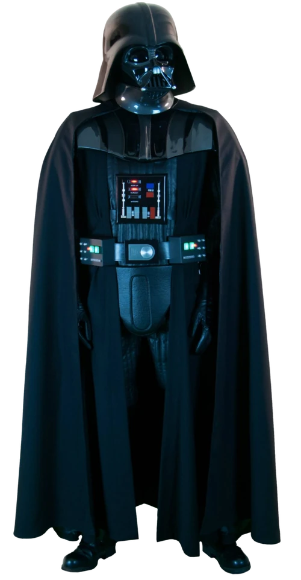

Who Is Darth Vader?
Darth Vader is a fictional character in the Star Wars franchise. The character is the central antagonist of the original trilogy and, as Anakin Skywalker, is one of the main protagonist throughout the prequel trilogy. Star Wars creator George Lucas has collectively referred to the first six episodic films of the franchise as "the tragedy of Darth Vader". He has become one of the most iconic villains in popular culture, and has been listed among the greatest villains and fictional characters ever.His masked face has become one of the most iconic character designs of all time.
Originally a slave on Tatooine, Anakin Skywalker is a Jedi prophesied to bring balance to the Force. He is lured to the dark side of the Force by Chancellor Sheev Palpatine / Darth Sidious and becomes a Sith Lord, assuming the title of Darth Vader. After a lightsaber battle with his former mentor Obi-Wan Kenobi on Mustafar, in which he is severely injured, Vader is transformed into a cyborg. He then serves the Galactic Empire for over two decades as its chief enforcer. Vader ultimately redeems himself by saving his son, Luke Skywalker, and killing Palpatine, sacrificing his own life in the process. He is also the secret husband of Padmé Amidala, the biological father of Princess Leia, and the grandfather of Kylo Ren (Ben Solo). In the non-canonical Star Wars Legends continuity, he is also the grandfather of Ben Skywalker, his eponym Anakin Solo, Jaina Solo and Darth Caedus (Jacen Solo), and the great-grandfather of Allana Solo.
The character has been portrayed by numerous actors: David Prowse physically portrayed Vader while James Earl Jones has voiced him in all of the films and some television shows, and Sebastian Shaw portrayed the unmasked Anakin in Return of the Jedi, as well as the character's spirit in the original release of that film. Jake Lloyd played Anakin Skywalker as a child in The Phantom Menace, the first film of the prequel trilogy, while Hayden Christensen played him as a young adult in the following two films, post-2004 releases of Return of the Jedi, and Obi-Wan Kenobi. In addition to the first six Star Wars films, the character appears in the anthology film Rogue One. He also appears in television series (most substantially The Clone Wars) and numerous iterations of the Star Wars Expanded Universe, including video games, novels, and comic books. Due to Vader's popularity, various merchandise of the character, such as action figures and replicas of his lightsaber, has been produced.
What Does Darth Vader Do?
Once Anakin Skywalker but, rechristened as Darth Vader, he became an agent of evil. Sidious assumed the mantle of Emperor, and Vader helped the Empire destroy the Jedi Order; without mercy, Anakin led a legion of clones into the Jedi Temple, and personally killed both fully trained Jedi and novice younglings alike.
Darth Vader's titles are Sith Lord and Supreme Commander of the Imperial Fleet. Vader is the Sith Apprentice of Emperor Palpatine. After completing his original assignment of purging the Jedi Order, his main mission was to squelch the Rebellion against the Empire.
In Canon, life of Vader is now described in two comics series:
- Star Wars: Darth Vader
- Star Wars: Darth Vader: Dark Lord of the Sith
Without mentioning details, Vader was task-oriented. Those tasks would (of course) mostly came from his master Palpatine. Sometimes he had to work alone, sometimes in small groups, sometimes he commanded fleets and armies ... Palpatine often tested him by pitting him against other Imperials, Vader tried to clandestinely work for his own interests, but Palpatine mostly foresaw this. Vader acted according to Palpatine's plans even if he didn't know that (this is one of the reasons Vader feared and respected Palpatine). Vader did have some time for himself (for example to build his castle on Mustafar), and he used this to better understand Dark Side of the Force.
Overall, Vader was not tied to specific unit, system or Galactic Sector, so he didn't regularly attend boring administrative meetings if they didn't concern his current mission.
Abilities
Darth Vader's suit
Following his near-fatal duel with Obi-Wan Kenobi on Mustafar in 19 BBY, Darth Vader received a mobile life support system encased in a suit of distinctive black armor.
Darth Vader's armor, serial number: E-3778Q-1, was designed to maintain and protect the young Sith apprentice's charred body while exuding an air of intimidation and control. His suit followed an ancient Sith tradition, in which the warriors of the dark side of the Force would adorn themselves in heavy armor. The suit's construction incorporated Sith alchemy to augment Vader's severely diminished physical strength and vitality.
he armor encased Vader completely, creating a seal to protect his charred skin and lungs. It was also uncomfortable to wear. Vader slowly learned to live with the isolation and anonymity that the suit imposed on him. Vader had to change his lightsaber style to compensate for the weight, bulk and inflexibility of his armor. The electronics of the suit were sensitive to electrical discharges. Vader later added a limited amount of insulation to the suit after discovering this vulnerability. To escape the armor's claustrophobic nature, Vader had several pressurized meditation chambers built where he could remove his mask and suit and still survive. Vader longed to be less dependent on his armor and tried at times to function without it, but he labored in vain.
- Helmet
- Torso
Like traditional Sith armor and patterned after that of ancient Sith droids, Darth Vader's suit was made to be both intimidating and fearsome. The front was carved out to fit around his head and show his "face." This helmet had a raised ridge that ran from between his eyes to the back of his head, where it merged into the durasteel, obsidian, and plasteel of the helmet itself. In addition, it was also rumored that the helmet's already strong metallic hull had also been further strengthened via dark side alchemy, with the specific technique not being found in the database of the Rhinnal Medical Academy. Two less jagged ridges swept over the eyes of Vader's mask proper and served to accent them. The jagged edges also acted as a means to deflect potential energy blows onto the thick shoulder armor. This helmet locked into the mask, via a pressurized seal comparable in integrity to a Class C spacesuit. Besides protection, it also stuck needles into Vader's skin when fixed in place, which feed neurological data on brainwave activity to the central chest computer, and possessed radiator conduction pads that were installed into the helmet as a means to allow excess heat to bleed through the metal surface.